HDFull
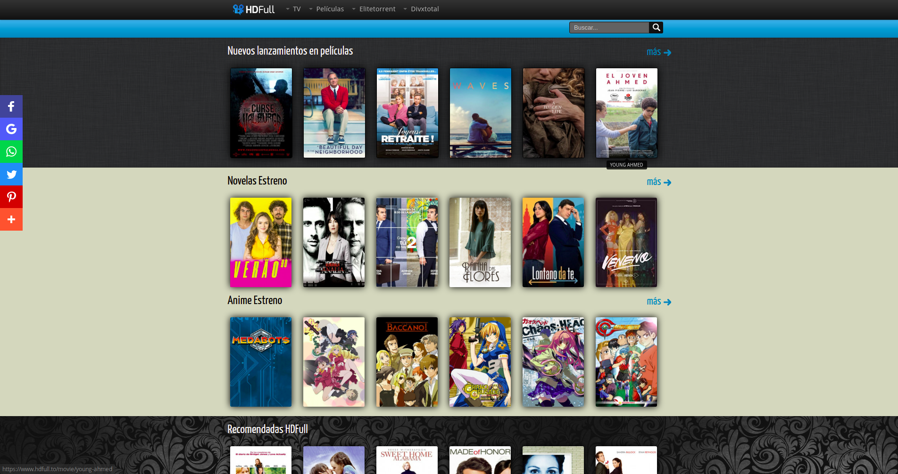HD Full es una de las webs más recomendables para ver películas en español sin necesidad de registrarse. Apenas se ingresa se puede filtrar por género, año de estreno y país, y en base a los resultados arrojados, elegir qué película se quiere ver.
GoMovies
GoMovies ofrece un amplio catálogo de series y películas, muchas de ellas en calidad HD. Es importante aclarar que su interfaz está en inglés, una característica que puede dificultar su uso para quienes no tienen manejo de este idioma.
PelisGratis.live
Tal y como el nombre de esta web sugiere, es una buena opción para ver películas a partir de un sistema de búsqueda y filtrado en español; además, gran parte de las películas que se encuentran disponibles allí están también en español. Para muchos puede ser un alivio, mientras que para otros puede resultar problemático, dado que hay quienes prefieren ver las películas en idioma original y no dobladas al español.
Miradetodo.net
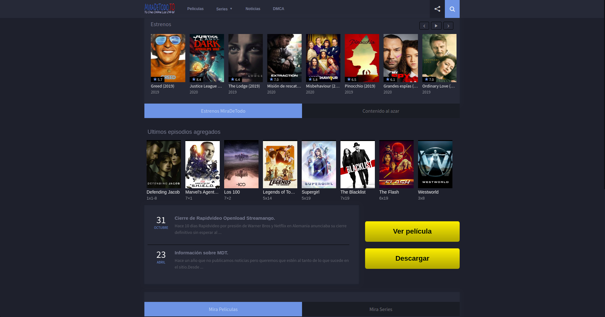Miradetodo.net es una de las mejores webs de cine y es libre de spam, por lo que son pocos los problemas que se pueden tener al momento de ver una película. Una característica no menor en los fanáticos que buscan entretenerse con alguna película sin distracciones. En esta página es posible encontrar gran variedad de títulos actuales, casi contemporáneos, dado que su repertorio se basa en "movies" actuales, desde 2009 hasta las últimas novedades.
MegaDede
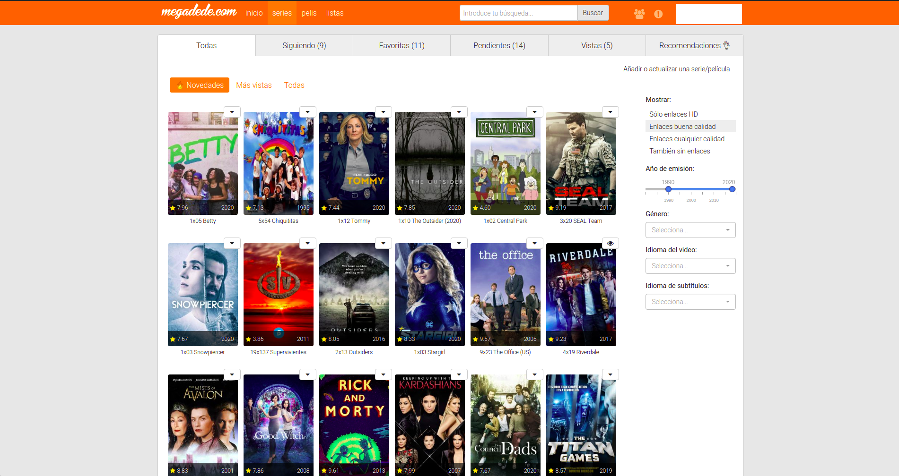MegaDede es la unión de PlusDede y PorDede. Este portal exige registrarse para poder acceder a él, pero a cambio ofrece un catálogo de películas y series brutal. Es de las webs más conocidas entre los usuarios, y todo ello gracias a la gran variedad de producciones que recopila, incluidos los estrenos más recientes, y la genial calidad de vídeo que ofrece. Suma también comentarios de los usuarios e información completa de cada obra y tienes su infalible cóctel.
Decoratrix.com
En la homepage del sitio encontramos aquellas que son las últimas entradas. Ya de esta página se pueden encontrar unas buenas ideas que pueden ser utilizadas en el desarollo de deferentes proyectos. Siguiendo con la esploración del portal empezamos a descubrir las deferentes secciones: Decorar, Organizar, Reformar, Niños, Lo último, Ideas en un trix y cocinar. Cada una de ellas ofrece deferentes solucciones. Muy interesante, a nuestro gusto, es la sección organizar donde se pueden encontrar muchísimos consejos cerca de la organización de los espacios. Mujeres, ¡os vaís a flipar!
Myleitmotiv.com
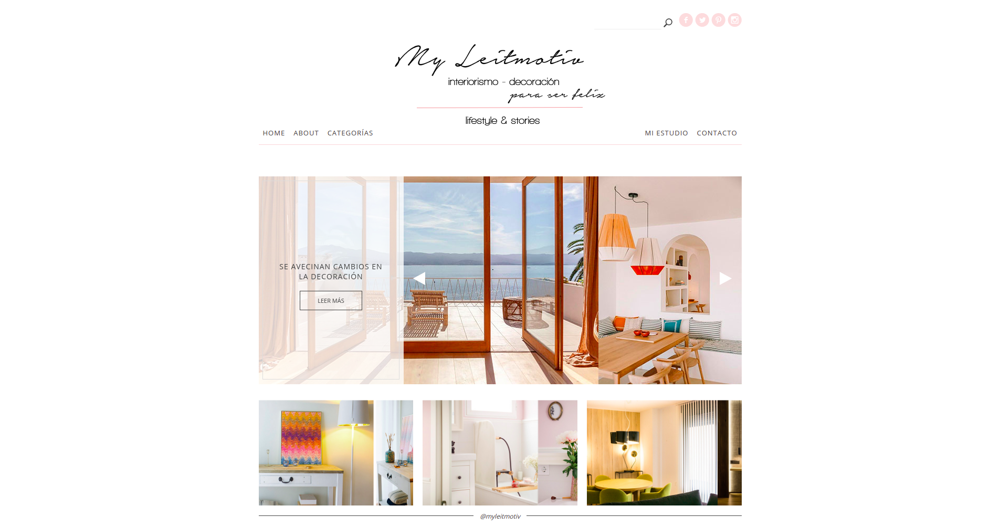El portal está lleno de arte y detalles. La formación artistíca de la redactora se puede percepir distintamente. Myleitmotiv.com se compone de cinco secciones. Home, donde podemos encontrar topic de relive y entradas recientes. About es la sección en la que Veronica se presenta a los demás. En pocas palabras consigue encantar a su lector llevandolo en su mundo. Categorías esta parte es el corazón del portal. Aquí encontramos servicios fotográficos y artículos sobre deferentes estilos y tendencias del Deco a las recetas de cocina lo tenemos verdaderamente todo. Mis servicios es donde Veronica habla de sus trabajos y describe todos los servicios que puede ofrecer a sus clientes. Si quereís contactar con esta interiorista (y su equipo) es bastante entrar en la sección Contacto y tendráis toda la información necesaria muy pronto.
Decoesfera.com
n la homepage encuentras todas las últimas entradas, en la parte central, mientras a la derecha está puesta una selección de los artículos más leydos de Decoesfera.com. ¿Cuáles son las categorías que nos han gustado más? Dificil elegir. Cajón Decoesfera presenta toda una selección de novedades hecha por la redacción de Decoesfera. Aquí encontramos tendencias, novedades, colaboraciones y mucho más. Muy interesante es la categoría Rebajas después de mirar las tendencias y los consejos que os dan los preparados interioristas de Decoesfera, os aconsejamos echar un vistazo a esta sección…quizás encontráis una super oferta!
Mi casa no es de muñecas
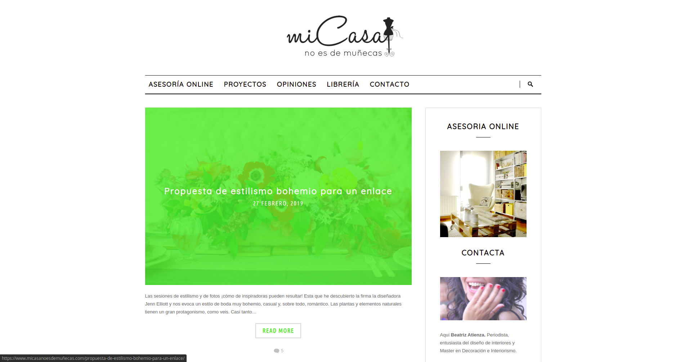Ya en la homepage encontramos tendencias, curiosidades y opiniones cerca las ultimas novedades del interiorismo. Este no es simplemente un lugar donde encontrar consejos si no una entre las mejores asesorias online. En la categoría Proyectos se pueden ver muchas de las realizaciones de la asesoria. En Opiniones es todo un detalle misurar la sodisfación de los clientes que te dan las ganas de dar una vuelta más por el portal y profundizar el conocimiento de este equipo de interioristas.
Decofilia.com
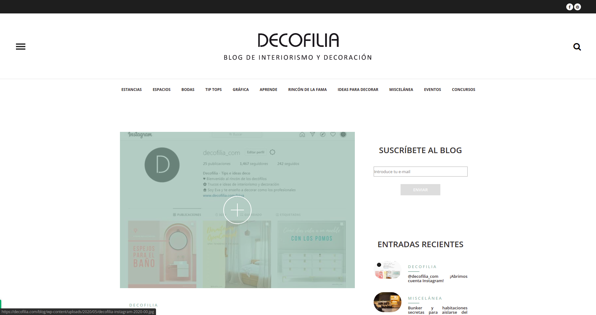¡Tendencias, tendencias y aún más tendencias! Estilo y interiorismo se unen en este portal donde a cada categoría es el resumen de gusto e ideas. Interesante, también, es la sección Boda donde las novias pueden emocionarse mirando y remirandoimagenes meravellosas de location y decoraciones ad hoc… ¡Aquí seguro van a incontrar todas las ideas y consejos que necesitan!
A fuego lento
Este portal creado en 1996 ofrece una amplia variedad de recetas clasificadas por platos, alimentos, dificultad de preparación y precio. Los usuarios podrán encontrar el menú perfecto para cada ocasión. Además, tiene un encabezado con las últimas noticias sobre gastronomía que han publicado.
El Comidista y Ondakín
El Comista es el blog gastronómico de El País donde Iturriaga comenta noticias, curiosidades y avances en el mundo de la cocina con un lenguaje coloquial y en clave de humor. Incluye recetas y responde a las dudas planteadas por los lectores.
7 Caníbales
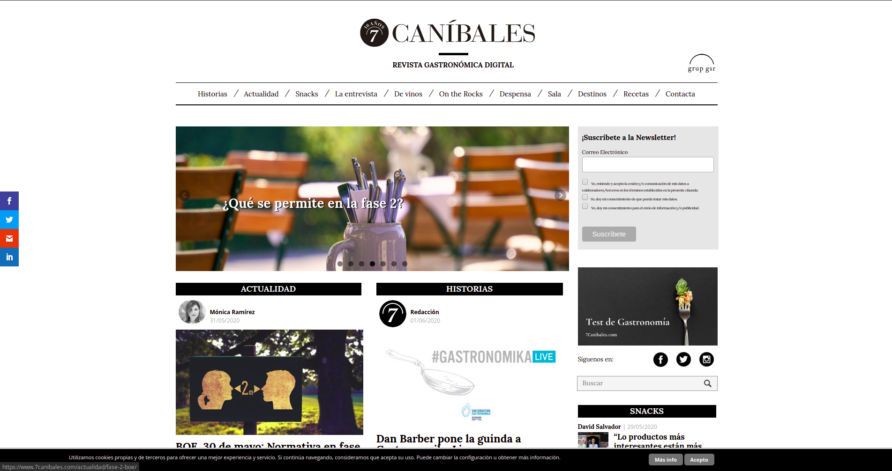Una revista gastronómica con varias secciones especializadas como: Snacks (noticias breves), De Narices (sobre el vino), Reflexión (opinión de los expertos), Recetas Express, La Entrevista (entrevista a cocineros que están de actualidad). Además presenta a los chefs más influyentes, las tendencias culinarias y un listado con los mejores restaurantes del mundo.
Hiulit's Cuisine
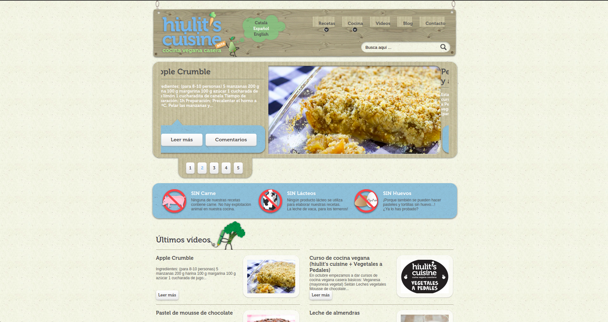Es una web sobre cocina casera para veganos que ha recibido el primer premio del concurso Bloguero Cocinero de Oro de Canal Cocina. Este site muestra que se pueden hacer recetas de todo tipo prescindiendo de ingredientes de origen animal (carne, lácteos o huevos). Informa sobre novedades y cursos de cocina vegana.
ComerJapones.com
Roger Ortuño Flamerich es el creador de esta web que muestra restaurantes, recetas, cursos y actualidad relacionada con la cocina nipona. ComerJapones.com ha recibido numerosos premios y reconocimientos convirtiéndose en el portal de referencia sobre gastronomía japonesa en español.
Leroy Merlin
Sin duda uno de los referentes en este mundo es Leroy Merlin. Una de las superficies más importantes a nivel internacional en donde podemos encontrar todo tipo de materiales y herramientas para nuestra casa, jardín, construcción, etc. Tanto si tenemos una tienda cerca de nuestra casa como desde su web, podemos encontrar todo tipo de productos, sin embargo, en la web de Leroy Merlin encontramos una sección muy interesantes, Hazlo tú mismo.
Bricocentro
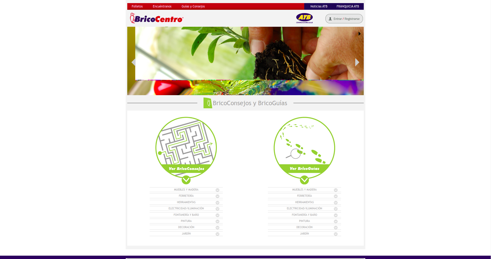Bricocentro es otra de las cadenas de tiendas con todo tipo de productos para el bricolaje. En su web, además de encontrar su propia tienda online, encontramos una sección denominada Guías y Consejos donde podemos encontrar manuales o tutoriales de electricidad, fontanería, iluminación, pintura, ferretería, iluminación, etc.
Bricomania
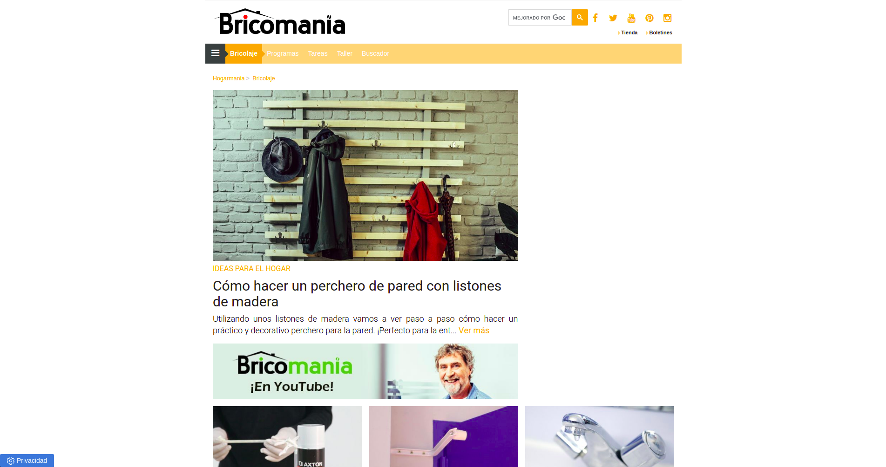Hogarmania es otra de las web de referencia para aquellos que quieren realizar alguna tarea en casa. Dentro de su web, encontramos una sección especialmente dedicada al bricolaje donde podemos encontrar un montón de tutoriales o Paso a Paso para cambiar el suelo de un baño sin obras, ideas para aislar nuestra casa del frío, instalar radiador toallero, etc.
Facilisimo
Ideas que mejora tu vida es el slogan de esta popular y conocida web donde además de todo tipo de consejos de belleza, cocina, mascotas y tecnología, entre otros, podemos encontrar un montón de tutoriales con manualidades. Tanto es así, que desde este mismo enlace, podemos acceder a la sección de bricolaje..
Bricotodo
Si lo que necesitamos es realizar algún trabajo sobre madera, uno de los sitios especializados es Bricotodo. Además de encontrar un montón de consejos y tutoriales para realizar paso a paso, una de las secciones más interesantes que encontramos en este sitio es el Consultorio técnico.
Muebles Lufe
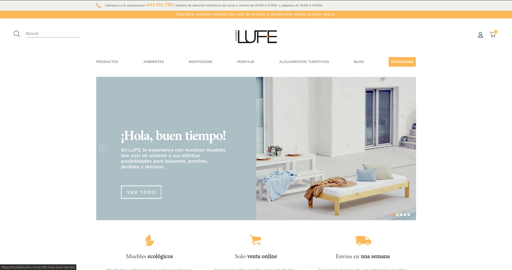Ya son un clásico entre nosotros. Los llamaron el IKEA vasco, pero ellos prefieren llamarse directamente Muebles LUFE, que es lo que son. Una fábrica y tienda de muebles baratos que vende online y que ofrece una experiencia parecida a IKEA. Aunque con materiales más naturales y con la particularidad de que solo comercializan su muebles a través de Internet. Su casa está en Azpeitia (Guipúzcoa) y en dos semanas pueden servirte el pedido.
Portobello Street
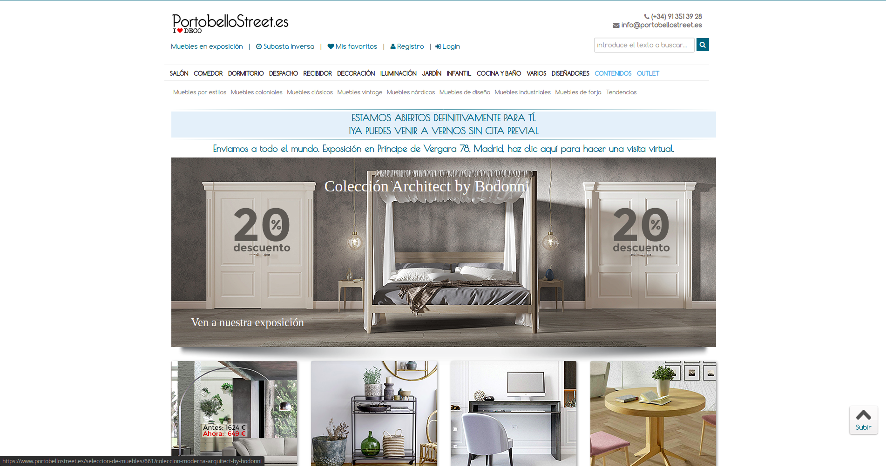Si eres puntilloso en esto de la decoración y no quieres renunciar al estilo, quizá debas echar un vistazo a la tienda de Portobello Street. Están en Madrid, pero sirven a toda España (y al mundo). Así que si quieres comprar por internet, no tendrás ningún problema. El catálogo es ciertamente extenso y está muy inspirado en los estilos. Vale, no todos los muebles que aquí se venden son baratos. Pero si no quieres renunciar a la sofisticación, esta es una buena opción para conseguir buenos muebles, sin tener que gastar lo que te costaría un conjunto de firma. Además, tienen una sección outlet en la que podrás encontrar infinidad de ofertas, rebajadas hasta un 70%.
Ikea
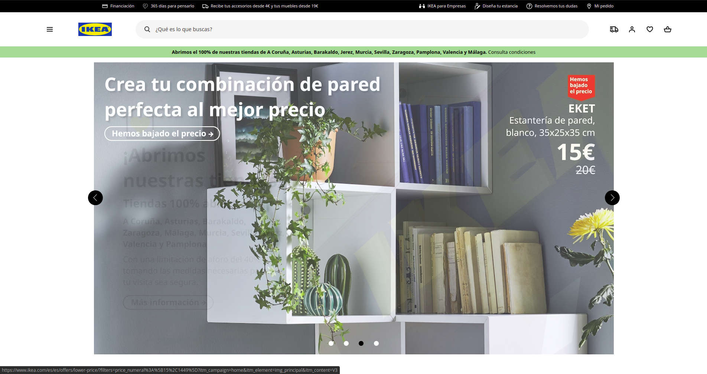Y vamos a por la tienda de tiendas. Uno no puede hablar de comprar muebles baratos online y dejarse a IKEA en el tintero. IKEA el mayor fabricante de muebles del mundo y tiene almacenes de exposición repartidos por toda la geografía. También en España. Sin embargo, desde hace un tiempo, ofrece a sus clientes la posibilidad de realizar compras online. Si bien debes tener en cuenta que los gastos de envío son elevados (sobre todo si vives lejos de un centro de distribución), el precio y la variedad de mueble que puedes conseguir en IKEA son absolutamente imbatibles. Ahora puedes rastrear la web de IKEA y cerrar una compra online. Te vendrá muy bien si tienes que adquirir muebles pesados y tendrás la opción de contratar el montaje al mismo tiempo.
Atrapamuebles
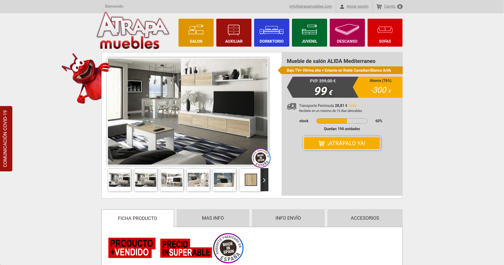¿Eres de los que siempre van a la caza de la ganga? Pues en este caso, puedes sumergirte en Atrapamuebles. En esta página siempre ofrecen ofertas puntuales de distintas combinaciones de muebles. Esto es muy interesante si necesitas amueblar un piso de nuevo, porque puedes conseguir un mueble de salón entero hasta con 470 euros de descuento. También tienes pisos completos, comedores, dormitorios o sofás convertibles con descuentos de hasta el 70%.
Westwing
Y por último está Westwing, un outlet especialmente pensado para todos aquellos que tampoco piensan renunciar al estilo. Desde aquí se ofrecen campañas temporales para marcas de lujo, de modo que puedes llegar a conseguir muebles de muy buena calidad prácticamente a mitad de precio. Tendrás que suscribirte e irás recibiendo ofertas todos los días a tu correo electrónico. Si además quieres aprovecharte de otras ofertas en decoración y complementos, aquí también las encontrarás.
Atrapamuebles
¿Eres de los que siempre van a la caza de la ganga? Pues en este caso, puedes sumergirte en Atrapamuebles. En esta página siempre ofrecen ofertas puntuales de distintas combinaciones de muebles. Esto es muy interesante si necesitas amueblar un piso de nuevo, porque puedes conseguir un mueble de salón entero hasta con 470 euros de descuento. También tienes pisos completos, comedores, dormitorios o sofás convertibles con descuentos de hasta el 70%.